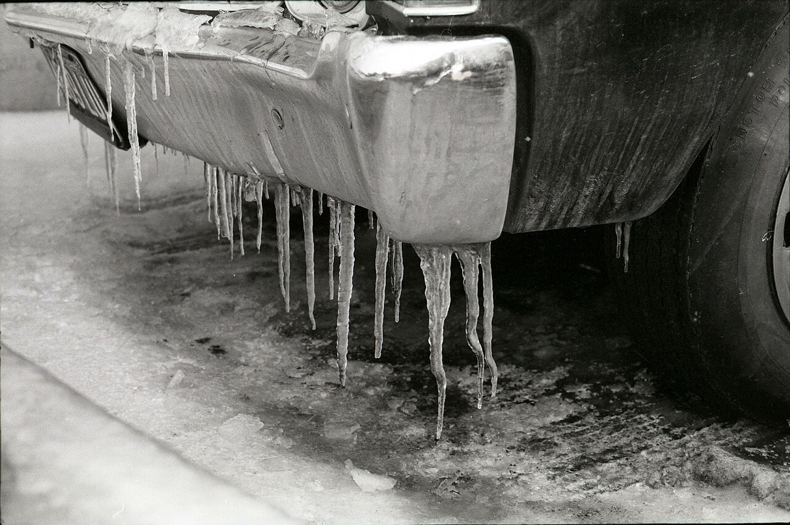

Frozen Locks and Doors: The Right Way to Open Them
A frozen lock is a five-minute fix if you do it right — and a broken key if you force it.

Photo: Unknown (via DPLA), Public Domain, via Wikimedia Commons
.jpg){kind=link}
Freezing rain overnight, and now the key won't turn, or the door won't budge at all. The instinct is to force it — twist the key harder, yank the door. That's exactly how keys snap off in locks and door handles break. A frozen lock or door is a small problem with a simple fix, but only if you resist the urge to muscle it.
Why it's wrong
Forcing a key in a frozen lock is the fastest way to snap it off inside the cylinder — and then you have a broken key, a frozen lock, and a locksmith bill. Hot water is the other classic mistake: it thaws the lock for about a minute, then the water itself freezes inside the mechanism and makes the freeze worse than before. Yanking a frozen door can tear the rubber door seal, and a torn seal leaks water and wind all winter. And prying at a frozen door with a screwdriver damages the paint and the seal at the same time. Every forceful shortcut turns a five-minute thaw into a repair.
The right way
- Use lock de-icer. A small bottle of lock de-icer (mostly alcohol) costs a few dollars. A squirt into the keyhole melts the ice in seconds. Keep it in your coat pocket, not in the car — a de-icer locked inside a frozen car helps nobody.
- Hand sanitizer works in a pinch. The alcohol in hand sanitizer melts ice the same way. A drop on the key and a drop in the lock.
- Warm the key gently. Hold the key in your warm hands for a minute, or warm it with a lighter for a few seconds, then slide it in slowly. The warm metal melts a path through the ice. Don't overheat it — you want warm, not glowing.
- Push, don't pull, a frozen door. Lean into the door with your hip to break the ice seal around the edges, then pull it open. The push cracks the ice without tearing the rubber seal.
- Try another door. If the driver's door is frozen solid, another door may open fine — climb in and start the car, and the heat will thaw the rest.
- Prevent it tonight. Spray silicone lubricant on the rubber door seals (not WD-40 — silicone is made for rubber). It stops the seals freezing to the body. A shot of graphite lubricant in the lock cylinder keeps water out of the mechanism.
The rundown
De-icer in the lock, push the door before you pull it, and never force a key or pour hot water. Then prevent tomorrow's freeze with silicone spray on the seals tonight. Five minutes of prevention beats a snapped key every single time.
← Back to the full winter checklist